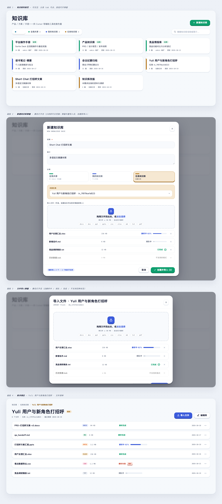
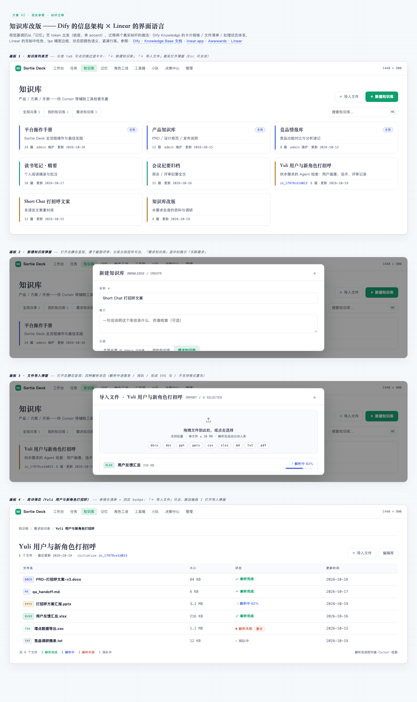
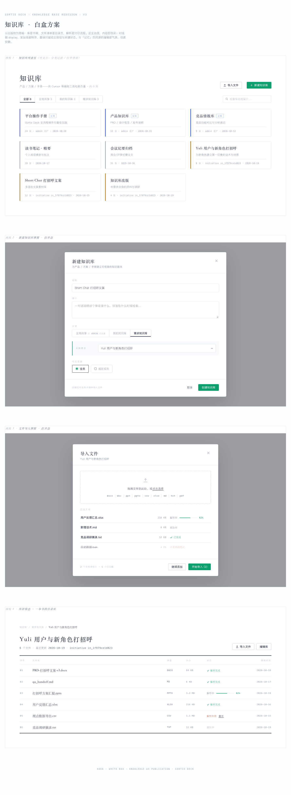

仿「记忆」页编辑部风 · 每版含 4 画板：知识库列表页（分类即可见范围：全局共享 / 我的 / 任务知识库）· 新建知识库弹窗（内置导入区，创建即导入）· 文件导入弹窗（docx/ppt/csv/xlsx/md/txt…+ 解析状态）· 库详情。列表页可交互（tab 过滤、真实打开弹窗），选定版本后再落地实现。

轮盘抽中 4 号风格。大圆角 + 硬底凸起 3D 按钮（按压回弹）+ 糖果 accent；信息骨架沿用记忆页。✅ 已按反馈修订：删「可见范围」（分类即可见范围）、新建弹窗内置导入区（创建并导入一步完成）。三版中最活泼。

迁移 Dify Knowledge 的卡片网格 / 文件清单 / 处理状态体系与 Linear 的克制中性色、1px 精密边框、状态即颜色语义。四态 badge（排队/解析中/完成/失败）+ 文件类型徽标，三版中最理性专业。

近全白底、内容即色彩；库是书脊、文件清单是目录页、解析是付印流程。衬线 display + 发丝线 + 单一墨绿 accent。与记忆页同源但更安静高级，三版中最有仪式感。
SORTIE DECK · KNOWLEDGE BASE REDESIGN · 2026-10-19 · huashu-design 三套逻辑并行